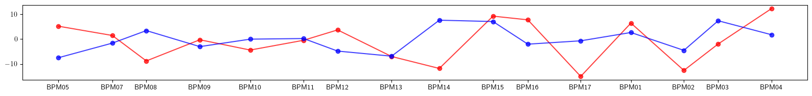
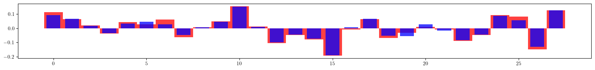
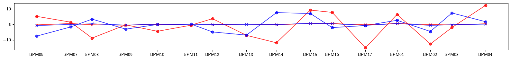
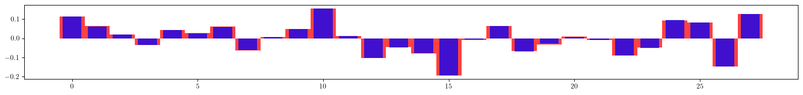
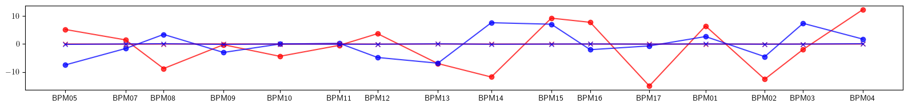
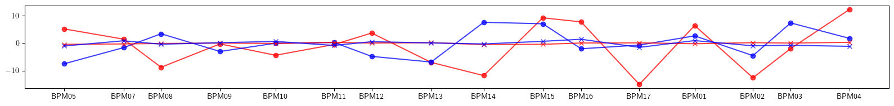
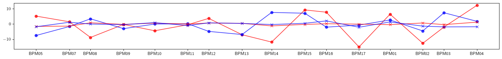

Example-46: Twiss (Optics correction)
[1]:
# In this example model response matrices of normal and chromatic Twiss parameters are used for correction
# ML style optimization is also performed for optics correction
[2]:
# Import
from pprint import pprint
import torch
from torch import Tensor
from torch.utils.data import TensorDataset
from torch.utils.data import DataLoader
from pathlib import Path
import matplotlib
from matplotlib import pyplot as plt
matplotlib.rcParams['text.usetex'] = True
from model.library.line import Line
from model.command.util import select
from model.command.external import load_sdds
from model.command.external import load_lattice
from model.command.build import build
from model.command.wrapper import group
from model.command.wrapper import forward
from model.command.wrapper import inverse
from model.command.wrapper import normalize
from model.command.wrapper import Wrapper
from model.command.tune import tune
from model.command.twiss import twiss
from model.command.twiss import chromatic_twiss
[3]:
# Load ELEGANT twiss
path = Path('ic.twiss')
parameters, columns = load_sdds(path)
nu_qx:Tensor = torch.tensor(parameters['nux'] % 1, dtype=torch.float64)
nu_qy:Tensor = torch.tensor(parameters['nuy'] % 1, dtype=torch.float64)
# Set twiss parameters at BPMs
kinds = select(columns, 'ElementType', keep=False)
a_qx = select(columns, 'alphax', keep=False)
b_qx = select(columns, 'betax' , keep=False)
a_qy = select(columns, 'alphay', keep=False)
b_qy = select(columns, 'betay' , keep=False)
a_qx:Tensor = torch.tensor([value for (key, value), kind in zip(a_qx.items(), kinds.values()) if kind == 'MONI'], dtype=torch.float64)
b_qx:Tensor = torch.tensor([value for (key, value), kind in zip(b_qx.items(), kinds.values()) if kind == 'MONI'], dtype=torch.float64)
a_qy:Tensor = torch.tensor([value for (key, value), kind in zip(a_qy.items(), kinds.values()) if kind == 'MONI'], dtype=torch.float64)
b_qy:Tensor = torch.tensor([value for (key, value), kind in zip(b_qy.items(), kinds.values()) if kind == 'MONI'], dtype=torch.float64)
positions = select(columns, 's', keep=False).items()
positions = [value for (key, value), kind in zip(positions, kinds.values()) if kind == 'MONI']
[4]:
# Build and setup lattice
# Load ELEGANT table
path = Path('ic.lte')
data = load_lattice(path)
# Build ELEGANT table
ring:Line = build('RING', 'ELEGANT', data)
ring.flatten()
# Merge drifts
ring.merge()
# Split BPMs
ring.split((None, ['BPM'], None, None))
# Roll lattice start
ring.roll(1)
# Set linear dipoles
for element in ring:
if element.__class__.__name__ == 'Dipole':
element.linear = True
# Split lattice into lines by BPMs
ring.splice()
# Set number of elements of different kinds
nb = ring.describe['BPM']
nq = ring.describe['Quadrupole']
ns = ring.describe['Sextupole']
[5]:
# Compare tunes
nuqx, nuqy = tune(ring, [], alignment=False, matched=True)
print(torch.allclose(nu_qx, nuqx))
print(torch.allclose(nu_qy, nuqy))
True
True
[6]:
# Compare twiss
aqx, bqx, aqy, bqy = twiss(ring, [], alignment=False, matched=True, advance=True, full=False, convert=True).T
print(torch.allclose(a_qx, aqx))
print(torch.allclose(b_qx, bqx))
print(torch.allclose(a_qy, aqy))
print(torch.allclose(b_qy, bqy))
True
True
True
True
[7]:
# Test derivatives with respect kn and ks at the lattice start
kn = torch.zeros(nq, dtype=torch.float64)
ks = torch.zeros(nq, dtype=torch.float64)
pprint(torch.func.jacrev(lambda kn: twiss(ring, [kn], ('kn', ['Quadrupole'], None, None), matched=True))(kn))
print()
pprint(torch.func.jacrev(lambda ks: twiss(ring, [ks], ('ks', ['Quadrupole'], None, None), matched=True))(ks))
print()
# Note, first order derivatives with respect to ks are identicaly equal to zero as expected
# Second order derivative is not identicaly equal to zero in general
# In the following, only first order derivatives are used for optics correctios (lattice without coupling)
tensor([[-0.0893, 0.4014, 1.2554, -0.9068, -1.5491, -0.9866, -0.6147, -0.7071,
-1.9186, 0.2045, -0.1659, 0.4221, 1.9239, 2.2147, 0.5854, -0.4487,
-0.4684, -1.9595, -0.0112, -0.2204, -0.9209, -1.5967, -0.0541, 1.5081,
0.5988, -0.3222, -0.4638, 0.8415],
[ 0.0182, 0.1496, 0.5733, -0.6730, -0.7756, -0.5178, -0.4104, -0.5325,
-0.9651, 0.2699, -0.0145, 0.1734, 0.9035, 1.1954, 0.3374, -0.2984,
-0.4055, -1.0062, 0.1660, -0.0147, -0.4518, -0.8235, 0.1829, 0.8281,
0.3562, -0.2319, -0.4848, 0.2358],
[ 1.6183, -0.0219, -0.2993, -0.0049, 0.3526, 0.2005, -0.5750, -0.4693,
0.1832, 0.0065, -0.5948, -2.2667, -0.8472, 0.8119, 2.2819, 0.7206,
0.0759, -0.2127, 0.4684, 0.6358, -0.0792, -0.2893, -0.0394, 0.3584,
0.2001, -1.2685, -0.6598, 0.2486],
[-0.7202, 0.1496, 0.2258, -0.0342, -0.1608, -0.0228, 0.3921, 0.2789,
-0.1348, 0.0622, 0.4565, 1.3632, 0.4758, -0.5180, -1.3618, -0.3315,
0.0206, 0.1024, -0.2828, -0.3332, 0.1447, 0.2237, -0.0135, -0.1681,
0.0184, 1.0088, 0.4647, -0.2653]], dtype=torch.float64)
tensor([[0., 0., 0., 0., 0., 0., 0., 0., 0., 0., 0., 0., 0., 0., 0., 0., 0., 0., 0., 0., 0., 0., 0., 0.,
0., 0., 0., 0.],
[0., 0., 0., 0., 0., 0., 0., 0., 0., 0., 0., 0., 0., 0., 0., 0., 0., 0., 0., 0., 0., 0., 0., 0.,
0., 0., 0., 0.],
[0., 0., 0., 0., 0., 0., 0., 0., 0., 0., 0., 0., 0., 0., 0., 0., 0., 0., 0., 0., 0., 0., 0., 0.,
0., 0., 0., 0.],
[0., 0., 0., 0., 0., 0., 0., 0., 0., 0., 0., 0., 0., 0., 0., 0., 0., 0., 0., 0., 0., 0., 0., 0.,
0., 0., 0., 0.]], dtype=torch.float64)
[8]:
# Compute twiss derivatives with respect to quadrupole settings (normal and chromatic)
def fn_dtwiss_dkn(kn):
return twiss(ring, [kn], ('kn', ['Quadrupole'], None, None), alignment=False, matched=True, advance=True, full=False, convert=True)
def fn_dtwiss_dp_dkn(kn):
return chromatic_twiss(ring, [kn], ('kn', ['Quadrupole'], None, None), alignment=False, matched=True, advance=True, full=False, convert=True)
kn = torch.zeros(nq, dtype=torch.float64)
dtwiss_dkn = torch.func.jacrev(fn_dtwiss_dkn)(kn)
dtwiss_dp_dkn = torch.func.jacrev(fn_dtwiss_dp_dkn)(kn)
print(dtwiss_dkn.shape)
print(dtwiss_dp_dkn.shape)
torch.Size([16, 4, 28])
torch.Size([16, 4, 28])
[9]:
# Set lattice with focusing errors (no coupling)
error:Line = ring.clone()
nq = error.describe['Quadrupole']
error_kn = 0.1*torch.randn(nq, dtype=torch.float64)
index = 0
label = ''
for line in error.sequence:
for element in line:
if element.__class__.__name__ == 'Quadrupole':
if label != element.name:
index +=1
label = element.name
element.kn = (element.kn + error_kn[index - 1]).item()
[10]:
# Compute twiss and plot beta beating
ax_model, bx_model, ay_model, by_model = twiss(ring, [], alignment=False, matched=True, advance=True, full=False, convert=True).T
ax_error, bx_error, ay_error, by_error = twiss(error, [], alignment=False, matched=True, advance=True, full=False, convert=True).T
# Compare twiss
print((ax_model - ax_error).norm())
print((bx_model - bx_error).norm())
print((ay_model - ay_error).norm())
print((by_model - by_error).norm())
print()
# Plot beta beating
plt.figure(figsize=(16, 2))
plt.plot(ring.locations().cpu().numpy(), 100*((bx_model - bx_error)/bx_model).cpu().numpy(), color='red', alpha=0.75, marker='o')
plt.plot(ring.locations().cpu().numpy(), 100*((by_model - by_error)/by_model).cpu().numpy(), color='blue', alpha=0.75, marker='o')
plt.xticks(ticks=positions, labels=['BPM05', 'BPM07', 'BPM08', 'BPM09', 'BPM10', 'BPM11', 'BPM12', 'BPM13', 'BPM14', 'BPM15', 'BPM16', 'BPM17', 'BPM01', 'BPM02', 'BPM03', 'BPM04'])
plt.tight_layout()
plt.show()
tensor(1.3708, dtype=torch.float64)
tensor(0.8085, dtype=torch.float64)
tensor(0.5866, dtype=torch.float64)
tensor(0.3774, dtype=torch.float64)

[11]:
# Test Twiss response
twiss_error = torch.stack([ax_error, bx_error, ay_error, by_error])
twiss_model = torch.stack([ax_model, bx_model, ay_model, by_model])
print((twiss_error - (twiss_model + 0.0*(dtwiss_dkn @ error_kn).T)).norm())
print((twiss_error - (twiss_model + 1.0*(dtwiss_dkn @ error_kn).T)).norm())
tensor(1.7376, dtype=torch.float64)
tensor(0.2810, dtype=torch.float64)
[12]:
# Perform correction (model to experiment)
# Set response matrix
matrix = dtwiss_dkn.reshape(-1, nq)
# Set target twiss parameters
twiss_error = twiss(error, [], alignment=False, matched=True, advance=True, full=False, convert=True)
# Set learning rate
lr = 0.1
# Set initial values
kn = torch.zeros_like(error_kn)
# Fit
for _ in range(32):
twiss_model = twiss(ring, [kn], ('kn', ['Quadrupole'], None, None), alignment=False, matched=True, advance=True, full=False, convert=True)
dkn = - lr*torch.linalg.lstsq(matrix, (twiss_model - twiss_error).flatten(), driver='gelsd').solution
kn += dkn
print((twiss_model - twiss_error).norm())
# Plot final quadrupole settings
plt.figure(figsize=(16, 2))
plt.bar(range(len(error_kn)), error_kn.cpu().numpy(), color='red', alpha=0.75, width=1)
plt.bar(range(len(kn)), +kn.cpu().numpy(), color='blue', alpha=0.75, width=0.75)
plt.tight_layout()
plt.show()
tensor(1.7376, dtype=torch.float64)
tensor(1.5638, dtype=torch.float64)
tensor(1.4067, dtype=torch.float64)
tensor(1.2649, dtype=torch.float64)
tensor(1.1371, dtype=torch.float64)
tensor(1.0220, dtype=torch.float64)
tensor(0.9184, dtype=torch.float64)
tensor(0.8252, dtype=torch.float64)
tensor(0.7415, dtype=torch.float64)
tensor(0.6663, dtype=torch.float64)
tensor(0.5989, dtype=torch.float64)
tensor(0.5384, dtype=torch.float64)
tensor(0.4842, dtype=torch.float64)
tensor(0.4357, dtype=torch.float64)
tensor(0.3922, dtype=torch.float64)
tensor(0.3533, dtype=torch.float64)
tensor(0.3185, dtype=torch.float64)
tensor(0.2873, dtype=torch.float64)
tensor(0.2595, dtype=torch.float64)
tensor(0.2345, dtype=torch.float64)
tensor(0.2122, dtype=torch.float64)
tensor(0.1922, dtype=torch.float64)
tensor(0.1743, dtype=torch.float64)
tensor(0.1583, dtype=torch.float64)
tensor(0.1440, dtype=torch.float64)
tensor(0.1311, dtype=torch.float64)
tensor(0.1195, dtype=torch.float64)
tensor(0.1091, dtype=torch.float64)
tensor(0.0998, dtype=torch.float64)
tensor(0.0914, dtype=torch.float64)
tensor(0.0838, dtype=torch.float64)
tensor(0.0770, dtype=torch.float64)

[13]:
# Apply corrections
lattice:Line = error.clone()
index = 0
label = ''
for line in lattice.sequence:
for element in line:
if element.__class__.__name__ == 'Quadrupole':
if label != element.name:
index +=1
label = element.name
element.kn = (element.kn - kn[index - 1]).item()
[14]:
# Compute twiss and plot beta beating
ax_model, bx_model, ay_model, by_model = twiss(ring, [], alignment=False, matched=True, advance=True, full=False, convert=True).T
ax_error, bx_error, ay_error, by_error = twiss(error, [], alignment=False, matched=True, advance=True, full=False, convert=True).T
ax_final, bx_final, ay_final, by_final = twiss(lattice, [], alignment=False, matched=True, advance=True, full=False, convert=True).T
# Plot beta beating
plt.figure(figsize=(16, 2))
plt.plot(ring.locations().cpu().numpy(), 100*((bx_model - bx_error)/bx_model).cpu().numpy(), color='red', alpha=0.75, marker='o')
plt.plot(ring.locations().cpu().numpy(), 100*((by_model - by_error)/by_model).cpu().numpy(), color='blue', alpha=0.75, marker='o')
plt.plot(ring.locations().cpu().numpy(), 100*((bx_model - bx_final)/bx_model).cpu().numpy(), color='red', alpha=0.75, marker='x')
plt.plot(ring.locations().cpu().numpy(), 100*((by_model - by_final)/by_model).cpu().numpy(), color='blue', alpha=0.75, marker='x')
plt.xticks(ticks=positions, labels=['BPM05', 'BPM07', 'BPM08', 'BPM09', 'BPM10', 'BPM11', 'BPM12', 'BPM13', 'BPM14', 'BPM15', 'BPM16', 'BPM17', 'BPM01', 'BPM02', 'BPM03', 'BPM04'])
plt.tight_layout()
plt.show()

[15]:
# Test Twiss response (chromatic)
twiss_error = chromatic_twiss(error, [], alignment=False, matched=True, advance=True, full=False, convert=True)
twiss_model = chromatic_twiss(ring, [], alignment=False, matched=True, advance=True, full=False, convert=True)
print((twiss_error - (twiss_model + 0.0*(dtwiss_dp_dkn @ error_kn))).norm())
print((twiss_error - (twiss_model + 1.0*(dtwiss_dp_dkn @ error_kn))).norm())
tensor(69.5123, dtype=torch.float64)
tensor(5.5803, dtype=torch.float64)
[16]:
# Perform correction (model to experiment) including chromatic twiss
# Set response matrix
matrix = torch.vstack([dtwiss_dkn.reshape(-1, nq), dtwiss_dp_dkn.reshape(-1, nq)])
# Set target twiss parameters
twiss_error = twiss(error, [], alignment=False, matched=True, advance=True, full=False, convert=True)
chromatic_twiss_error = chromatic_twiss(error, [], alignment=False, matched=True, advance=True, full=False, convert=True)
# Set learning rate
lr = 0.1
# Set initial values
kn = torch.zeros_like(error_kn)
# Fit
for _ in range(64):
twiss_model = twiss(ring, [kn], ('kn', ['Quadrupole'], None, None), alignment=False, matched=True, advance=True, full=False, convert=True)
chromatic_twiss_model = chromatic_twiss(ring, [kn], ('kn', ['Quadrupole'], None, None), alignment=False, matched=True, advance=True, full=False, convert=True)
dkn = - lr*torch.linalg.lstsq(matrix, torch.stack([twiss_model - twiss_error, chromatic_twiss_model - chromatic_twiss_error]).flatten(), driver='gelsd').solution
kn += dkn
print(torch.stack([twiss_model - twiss_error, chromatic_twiss_model - chromatic_twiss_error]).norm())
# Plot final quadrupole settings
plt.figure(figsize=(16, 2))
plt.bar(range(len(error_kn)), error_kn.cpu().numpy(), color='red', alpha=0.75, width=1)
plt.bar(range(len(kn)), +kn.cpu().numpy(), color='blue', alpha=0.75, width=0.75)
plt.tight_layout()
plt.show()
tensor(69.5340, dtype=torch.float64)
tensor(62.5709, dtype=torch.float64)
tensor(56.2831, dtype=torch.float64)
tensor(50.6092, dtype=torch.float64)
tensor(45.4934, dtype=torch.float64)
tensor(40.8845, dtype=torch.float64)
tensor(36.7358, dtype=torch.float64)
tensor(33.0042, dtype=torch.float64)
tensor(29.6499, dtype=torch.float64)
tensor(26.6367, dtype=torch.float64)
tensor(23.9311, dtype=torch.float64)
tensor(21.5026, dtype=torch.float64)
tensor(19.3235, dtype=torch.float64)
tensor(17.3686, dtype=torch.float64)
tensor(15.6148, dtype=torch.float64)
tensor(14.0417, dtype=torch.float64)
tensor(12.6304, dtype=torch.float64)
tensor(11.3641, dtype=torch.float64)
tensor(10.2279, dtype=torch.float64)
tensor(9.2081, dtype=torch.float64)
tensor(8.2926, dtype=torch.float64)
tensor(7.4706, dtype=torch.float64)
tensor(6.7322, dtype=torch.float64)
tensor(6.0687, dtype=torch.float64)
tensor(5.4725, dtype=torch.float64)
tensor(4.9364, dtype=torch.float64)
tensor(4.4543, dtype=torch.float64)
tensor(4.0206, dtype=torch.float64)
tensor(3.6303, dtype=torch.float64)
tensor(3.2790, dtype=torch.float64)
tensor(2.9626, dtype=torch.float64)
tensor(2.6776, dtype=torch.float64)
tensor(2.4208, dtype=torch.float64)
tensor(2.1893, dtype=torch.float64)
tensor(1.9806, dtype=torch.float64)
tensor(1.7924, dtype=torch.float64)
tensor(1.6225, dtype=torch.float64)
tensor(1.4692, dtype=torch.float64)
tensor(1.3308, dtype=torch.float64)
tensor(1.2059, dtype=torch.float64)
tensor(1.0930, dtype=torch.float64)
tensor(0.9909, dtype=torch.float64)
tensor(0.8987, dtype=torch.float64)
tensor(0.8153, dtype=torch.float64)
tensor(0.7399, dtype=torch.float64)
tensor(0.6717, dtype=torch.float64)
tensor(0.6099, dtype=torch.float64)
tensor(0.5540, dtype=torch.float64)
tensor(0.5034, dtype=torch.float64)
tensor(0.4575, dtype=torch.float64)
tensor(0.4159, dtype=torch.float64)
tensor(0.3783, dtype=torch.float64)
tensor(0.3441, dtype=torch.float64)
tensor(0.3131, dtype=torch.float64)
tensor(0.2850, dtype=torch.float64)
tensor(0.2595, dtype=torch.float64)
tensor(0.2364, dtype=torch.float64)
tensor(0.2154, dtype=torch.float64)
tensor(0.1963, dtype=torch.float64)
tensor(0.1789, dtype=torch.float64)
tensor(0.1632, dtype=torch.float64)
tensor(0.1489, dtype=torch.float64)
tensor(0.1358, dtype=torch.float64)
tensor(0.1240, dtype=torch.float64)

[17]:
# Apply corrections
lattice:Line = error.clone()
index = 0
label = ''
for line in lattice.sequence:
for element in line:
if element.__class__.__name__ == 'Quadrupole':
if label != element.name:
index +=1
label = element.name
element.kn = (element.kn - kn[index - 1]).item()
[18]:
# Compute twiss and plot beta beating
ax_model, bx_model, ay_model, by_model = twiss(ring, [], alignment=False, matched=True, advance=True, full=False, convert=True).T
ax_error, bx_error, ay_error, by_error = twiss(error, [], alignment=False, matched=True, advance=True, full=False, convert=True).T
ax_final, bx_final, ay_final, by_final = twiss(lattice, [], alignment=False, matched=True, advance=True, full=False, convert=True).T
# Plot beta beating
plt.figure(figsize=(16, 2))
plt.plot(ring.locations().cpu().numpy(), 100*((bx_model - bx_error)/bx_model).cpu().numpy(), color='red', alpha=0.75, marker='o')
plt.plot(ring.locations().cpu().numpy(), 100*((by_model - by_error)/by_model).cpu().numpy(), color='blue', alpha=0.75, marker='o')
plt.plot(ring.locations().cpu().numpy(), 100*((bx_model - bx_final)/bx_model).cpu().numpy(), color='red', alpha=0.75, marker='x')
plt.plot(ring.locations().cpu().numpy(), 100*((by_model - by_final)/by_model).cpu().numpy(), color='blue', alpha=0.75, marker='x')
plt.xticks(ticks=positions, labels=['BPM05', 'BPM07', 'BPM08', 'BPM09', 'BPM10', 'BPM11', 'BPM12', 'BPM13', 'BPM14', 'BPM15', 'BPM16', 'BPM17', 'BPM01', 'BPM02', 'BPM03', 'BPM04'])
plt.tight_layout()
plt.show()

[19]:
# ML style correction (model to experiment)
# Set target twiss parameters
twiss_error = twiss(error, [], alignment=False, matched=True, advance=True, full=False, convert=True)
# Set learning rate
lr = 0.005
# Set parametric twiss
def twiss_model(kn):
return twiss(ring, [kn], ('kn', ['Quadrupole'], None, None), alignment=False, matched=True, advance=True, full=False, convert=True)
# Set objective function
def objective(kn):
return (twiss_error - twiss_model(kn)).norm()
# Set initial values
kn = torch.zeros_like(error_kn)
# Test objective function
print(objective(0.0*error_kn))
print(objective(1.0*error_kn))
print()
# Set normalized objective
objective = normalize(objective, [(-0.5, 0.5)])
# Test normalized objective
print(objective(*forward([0.0*error_kn], [(-0.5, 0.5)])))
print(objective(*forward([1.0*error_kn], [(-0.5, 0.5)])))
print()
# Normalize initial settings
kn, *_ = forward([kn], [(-0.5, 0.5)])
# Set model (forward returns evaluated objective)
model = Wrapper(objective, kn)
# Set optimizer
optimizer = torch.optim.Adam(model.parameters(), lr=lr)
# Perform optimization
for epoch in range(64):
value = model()
value.backward()
optimizer.step()
optimizer.zero_grad()
print(value.detach())
tensor(1.7376, dtype=torch.float64)
tensor(0., dtype=torch.float64)
tensor(1.7376, dtype=torch.float64)
tensor(4.8796e-13, dtype=torch.float64)
tensor(1.7376, dtype=torch.float64)
tensor(1.5623, dtype=torch.float64)
tensor(1.4006, dtype=torch.float64)
tensor(1.2536, dtype=torch.float64)
tensor(1.1222, dtype=torch.float64)
tensor(1.0066, dtype=torch.float64)
tensor(0.9054, dtype=torch.float64)
tensor(0.8187, dtype=torch.float64)
tensor(0.7487, dtype=torch.float64)
tensor(0.6968, dtype=torch.float64)
tensor(0.6613, dtype=torch.float64)
tensor(0.6364, dtype=torch.float64)
tensor(0.6152, dtype=torch.float64)
tensor(0.5918, dtype=torch.float64)
tensor(0.5634, dtype=torch.float64)
tensor(0.5298, dtype=torch.float64)
tensor(0.4917, dtype=torch.float64)
tensor(0.4498, dtype=torch.float64)
tensor(0.4053, dtype=torch.float64)
tensor(0.3615, dtype=torch.float64)
tensor(0.3244, dtype=torch.float64)
tensor(0.2996, dtype=torch.float64)
tensor(0.2876, dtype=torch.float64)
tensor(0.2831, dtype=torch.float64)
tensor(0.2812, dtype=torch.float64)
tensor(0.2804, dtype=torch.float64)
tensor(0.2789, dtype=torch.float64)
tensor(0.2738, dtype=torch.float64)
tensor(0.2647, dtype=torch.float64)
tensor(0.2542, dtype=torch.float64)
tensor(0.2450, dtype=torch.float64)
tensor(0.2369, dtype=torch.float64)
tensor(0.2295, dtype=torch.float64)
tensor(0.2242, dtype=torch.float64)
tensor(0.2220, dtype=torch.float64)
tensor(0.2203, dtype=torch.float64)
tensor(0.2160, dtype=torch.float64)
tensor(0.2092, dtype=torch.float64)
tensor(0.2011, dtype=torch.float64)
tensor(0.1925, dtype=torch.float64)
tensor(0.1854, dtype=torch.float64)
tensor(0.1817, dtype=torch.float64)
tensor(0.1799, dtype=torch.float64)
tensor(0.1769, dtype=torch.float64)
tensor(0.1718, dtype=torch.float64)
tensor(0.1649, dtype=torch.float64)
tensor(0.1571, dtype=torch.float64)
tensor(0.1504, dtype=torch.float64)
tensor(0.1459, dtype=torch.float64)
tensor(0.1423, dtype=torch.float64)
tensor(0.1390, dtype=torch.float64)
tensor(0.1354, dtype=torch.float64)
tensor(0.1310, dtype=torch.float64)
tensor(0.1267, dtype=torch.float64)
tensor(0.1231, dtype=torch.float64)
tensor(0.1199, dtype=torch.float64)
tensor(0.1169, dtype=torch.float64)
tensor(0.1127, dtype=torch.float64)
tensor(0.1073, dtype=torch.float64)
tensor(0.1017, dtype=torch.float64)
tensor(0.0971, dtype=torch.float64)
tensor(0.0936, dtype=torch.float64)
tensor(0.0902, dtype=torch.float64)
tensor(0.0865, dtype=torch.float64)
[20]:
# Apply corrections
kn, *_ = inverse([kn], [(-0.5, 0.5)])
lattice:Line = error.clone()
index = 0
label = ''
for line in lattice.sequence:
for element in line:
if element.__class__.__name__ == 'Quadrupole':
if label != element.name:
index +=1
label = element.name
element.kn = (element.kn - kn[index - 1]).item()
[21]:
# Compute twiss and plot beta beating
ax_model, bx_model, ay_model, by_model = twiss(ring, [], alignment=False, matched=True, advance=True, full=False, convert=True).T
ax_error, bx_error, ay_error, by_error = twiss(error, [], alignment=False, matched=True, advance=True, full=False, convert=True).T
ax_final, bx_final, ay_final, by_final = twiss(lattice, [], alignment=False, matched=True, advance=True, full=False, convert=True).T
# Plot beta beating
plt.figure(figsize=(16, 2))
plt.plot(ring.locations().cpu().numpy(), 100*((bx_model - bx_error)/bx_model).cpu().numpy(), color='red', alpha=0.75, marker='o')
plt.plot(ring.locations().cpu().numpy(), 100*((by_model - by_error)/by_model).cpu().numpy(), color='blue', alpha=0.75, marker='o')
plt.plot(ring.locations().cpu().numpy(), 100*((bx_model - bx_final)/bx_model).cpu().numpy(), color='red', alpha=0.75, marker='x')
plt.plot(ring.locations().cpu().numpy(), 100*((by_model - by_final)/by_model).cpu().numpy(), color='blue', alpha=0.75, marker='x')
plt.xticks(ticks=positions, labels=['BPM05', 'BPM07', 'BPM08', 'BPM09', 'BPM10', 'BPM11', 'BPM12', 'BPM13', 'BPM14', 'BPM15', 'BPM16', 'BPM17', 'BPM01', 'BPM02', 'BPM03', 'BPM04'])
plt.tight_layout()
plt.show()

[22]:
# AdEMAMix optimizer
# https://arxiv.org/abs/2409.03137
# https://github.com/apple/ml-ademamix
import math
import torch
from torch.optim import Optimizer
def linear_warmup_scheduler(step, alpha_end, alpha_start=0, warmup=1):
if step < warmup:
a = step / float(warmup)
return (1.0-a) * alpha_start + a * alpha_end
return alpha_end
def linear_hl_warmup_scheduler(step, beta_end, beta_start=0, warmup=1):
def f(beta, eps=1e-8):
return math.log(0.5)/math.log(beta+eps)-1
def f_inv(t):
return math.pow(0.5, 1/(t+1))
if step < warmup:
a = step / float(warmup)
return f_inv((1.0-a) * f(beta_start) + a * f(beta_end))
return beta_end
class AdEMAMix(Optimizer):
"""Implements the AdEMAMix algorithm.
Arguments:
params (iterable): iterable of parameters to optimize or dicts defining
parameter groups
lr (float, optional): learning rate (default: 1e-3)
betas (Tuple[float, float, float], optional): coefficients used for computing
running averages of gradient and its square (default: (0.9, 0.999, 0.9999))
corresponding to beta_1, beta_2, beta_3 in AdEMAMix
alpha (float): AdEMAMix alpha coeficient mixing the slow and fast EMAs (default: 2)
beta3_warmup (int, optional): number of warmup steps used to increase beta3 (default: None)
alpha_warmup: (int, optional): number of warmup steps used to increase alpha (default: None)
eps (float, optional): term added to the denominator to improve
numerical stability (default: 1e-8)
weight_decay (float, optional): weight decay as in AdamW (default: 0)
"""
def __init__(self,
params,
lr=1e-3,
betas=(0.9, 0.999, 0.9999),
alpha=2.0,
beta3_warmup=None,
alpha_warmup=None,
eps=1e-8,
weight_decay=0):
defaults = dict(lr=lr,
betas=betas,
eps=eps,
alpha=alpha,
beta3_warmup=beta3_warmup,
alpha_warmup=alpha_warmup,
weight_decay=weight_decay)
super().__init__(params, defaults)
def __setstate__(self, state):
super().__setstate__(state)
@torch.no_grad()
def step(self, closure=None):
"""Performs a single optimization step.
Arguments:
closure (callable, optional): A closure that reevaluates the model
and returns the loss.
"""
loss = None
if closure is not None:
with torch.enable_grad():
loss = closure()
for group in self.param_groups:
lr = group["lr"]
lmbda = group["weight_decay"]
eps = group["eps"]
beta1, beta2, beta3_final = group["betas"]
beta3_warmup = group["beta3_warmup"]
alpha_final = group["alpha"]
alpha_warmup = group["alpha_warmup"]
for p in group['params']:
if p.grad is None:
continue
grad = p.grad
if grad.is_sparse:
raise RuntimeError('AdEMAMix does not support sparse gradients.')
state = self.state[p]
if len(state) == 0:
state['step'] = 0
if beta1 != 0.0:
state['exp_avg_fast'] = torch.zeros_like(p, memory_format=torch.preserve_format)
else:
state['exp_avg_fast'] = None
state['exp_avg_slow'] = torch.zeros_like(p, memory_format=torch.preserve_format)
state['exp_avg_sq'] = torch.zeros_like(p, memory_format=torch.preserve_format)
exp_avg_fast, exp_avg_slow, exp_avg_sq = state['exp_avg_fast'], state['exp_avg_slow'], state['exp_avg_sq']
state['step'] += 1
bias_correction1 = 1 - beta1 ** state['step']
bias_correction2 = 1 - beta2 ** state['step']
if alpha_warmup is not None:
alpha = linear_warmup_scheduler(state["step"], alpha_end=alpha_final, alpha_start=0, warmup=alpha_warmup)
else:
alpha = alpha_final
if beta3_warmup is not None:
beta3 = linear_hl_warmup_scheduler(state["step"], beta_end=beta3_final, beta_start=beta1, warmup=beta3_warmup)
else:
beta3 = beta3_final
if beta1 != 0.0:
exp_avg_fast.mul_(beta1).add_(grad, alpha=1 - beta1)
else:
exp_avg_fast = grad
exp_avg_slow.mul_(beta3).add_(grad, alpha=1 - beta3)
exp_avg_sq.mul_(beta2).addcmul_(grad, grad, value=1 - beta2)
denom = (exp_avg_sq.sqrt() / math.sqrt(bias_correction2)).add_(eps)
update = (exp_avg_fast.div(bias_correction1) + alpha * exp_avg_slow) / denom
update.add_(p, alpha=lmbda)
p.add_(-lr * update)
return loss
[23]:
# ML style correction (batched)
# Set target twiss parameters
twiss_error = twiss(error, [], alignment=False, matched=True, advance=True, full=False, convert=True)
# Set learning rate
lr = 0.005
# Define rings (Twiss parameters will be computed at each ring start)
rings:list[Line] = []
for i, _ in enumerate(ring):
line = ring.clone()
line.roll(i)
rings.append(line)
# Set batched function
_, ((_, names, _), *_), _ = group(ring, 0, len(ring) - 1, ('kn', ['Quadrupole'], None, None))
def task(Is, kn):
result = []
for I in Is:
result.append(twiss(rings[I], [kn], ('kn', None, names, None), alignment=False, matched=True, convert=True))
return torch.stack(result)
# Set initial values
kn = torch.zeros_like(error_kn)
# Normalize objective
task = normalize(task, [(None, None), (-0.5, 0.5)])
# Normalize initial settings
kn, *_ = forward([kn], [(-0.5, 0.5)])
# Set model
model = Wrapper(task, kn)
# Set optimizer
optimizer = AdEMAMix(model.parameters(), lr=lr)
# Set features and labels
X = torch.arange(len(ring))
y = twiss_error.clone()
# Set dataset
# Note, full set is used here, batch size is too small otherwise
batch_size = 16
dataset = TensorDataset(X.clone(), y.clone())
dataloader = DataLoader(dataset, batch_size=batch_size, shuffle=True)
# Set loss funtion
lf = torch.nn.MSELoss()
# Perfom optimization
for epoch in range(64):
for batch, (X, y) in enumerate(dataloader):
y_hat = model(X)
value = lf(y_hat, y)
value.backward()
optimizer.step()
optimizer.zero_grad()
with torch.no_grad():
print(value.detach())
tensor(0.0472, dtype=torch.float64)
tensor(0.0381, dtype=torch.float64)
tensor(0.0307, dtype=torch.float64)
tensor(0.0247, dtype=torch.float64)
tensor(0.0199, dtype=torch.float64)
tensor(0.0161, dtype=torch.float64)
tensor(0.0133, dtype=torch.float64)
tensor(0.0111, dtype=torch.float64)
tensor(0.0094, dtype=torch.float64)
tensor(0.0082, dtype=torch.float64)
tensor(0.0075, dtype=torch.float64)
tensor(0.0069, dtype=torch.float64)
tensor(0.0066, dtype=torch.float64)
tensor(0.0063, dtype=torch.float64)
tensor(0.0060, dtype=torch.float64)
tensor(0.0057, dtype=torch.float64)
tensor(0.0053, dtype=torch.float64)
tensor(0.0049, dtype=torch.float64)
tensor(0.0045, dtype=torch.float64)
tensor(0.0040, dtype=torch.float64)
tensor(0.0035, dtype=torch.float64)
tensor(0.0031, dtype=torch.float64)
tensor(0.0027, dtype=torch.float64)
tensor(0.0023, dtype=torch.float64)
tensor(0.0020, dtype=torch.float64)
tensor(0.0018, dtype=torch.float64)
tensor(0.0016, dtype=torch.float64)
tensor(0.0015, dtype=torch.float64)
tensor(0.0014, dtype=torch.float64)
tensor(0.0014, dtype=torch.float64)
tensor(0.0014, dtype=torch.float64)
tensor(0.0014, dtype=torch.float64)
tensor(0.0014, dtype=torch.float64)
tensor(0.0014, dtype=torch.float64)
tensor(0.0014, dtype=torch.float64)
tensor(0.0013, dtype=torch.float64)
tensor(0.0013, dtype=torch.float64)
tensor(0.0012, dtype=torch.float64)
tensor(0.0012, dtype=torch.float64)
tensor(0.0011, dtype=torch.float64)
tensor(0.0010, dtype=torch.float64)
tensor(0.0009, dtype=torch.float64)
tensor(0.0009, dtype=torch.float64)
tensor(0.0008, dtype=torch.float64)
tensor(0.0008, dtype=torch.float64)
tensor(0.0008, dtype=torch.float64)
tensor(0.0008, dtype=torch.float64)
tensor(0.0008, dtype=torch.float64)
tensor(0.0008, dtype=torch.float64)
tensor(0.0008, dtype=torch.float64)
tensor(0.0008, dtype=torch.float64)
tensor(0.0008, dtype=torch.float64)
tensor(0.0007, dtype=torch.float64)
tensor(0.0007, dtype=torch.float64)
tensor(0.0007, dtype=torch.float64)
tensor(0.0007, dtype=torch.float64)
tensor(0.0007, dtype=torch.float64)
tensor(0.0006, dtype=torch.float64)
tensor(0.0006, dtype=torch.float64)
tensor(0.0006, dtype=torch.float64)
tensor(0.0006, dtype=torch.float64)
tensor(0.0006, dtype=torch.float64)
tensor(0.0006, dtype=torch.float64)
tensor(0.0006, dtype=torch.float64)
[24]:
# Apply corrections
kn, *_ = inverse([kn], [(-0.5, 0.5)])
lattice:Line = error.clone()
index = 0
label = ''
for line in lattice.sequence:
for element in line:
if element.__class__.__name__ == 'Quadrupole':
if label != element.name:
index +=1
label = element.name
element.kn = (element.kn - kn[index - 1]).item()
[25]:
# Compute twiss and plot beta beating
ax_model, bx_model, ay_model, by_model = twiss(ring, [], alignment=False, matched=True, advance=True, full=False, convert=True).T
ax_error, bx_error, ay_error, by_error = twiss(error, [], alignment=False, matched=True, advance=True, full=False, convert=True).T
ax_final, bx_final, ay_final, by_final = twiss(lattice, [], alignment=False, matched=True, advance=True, full=False, convert=True).T
# Plot beta beating
plt.figure(figsize=(16, 2))
plt.plot(ring.locations().cpu().numpy(), 100*((bx_model - bx_error)/bx_model).cpu().numpy(), color='red', alpha=0.75, marker='o')
plt.plot(ring.locations().cpu().numpy(), 100*((by_model - by_error)/by_model).cpu().numpy(), color='blue', alpha=0.75, marker='o')
plt.plot(ring.locations().cpu().numpy(), 100*((bx_model - bx_final)/bx_model).cpu().numpy(), color='red', alpha=0.75, marker='x')
plt.plot(ring.locations().cpu().numpy(), 100*((by_model - by_final)/by_model).cpu().numpy(), color='blue', alpha=0.75, marker='x')
plt.xticks(ticks=positions, labels=['BPM05', 'BPM07', 'BPM08', 'BPM09', 'BPM10', 'BPM11', 'BPM12', 'BPM13', 'BPM14', 'BPM15', 'BPM16', 'BPM17', 'BPM01', 'BPM02', 'BPM03', 'BPM04'])
plt.tight_layout()
plt.show()
